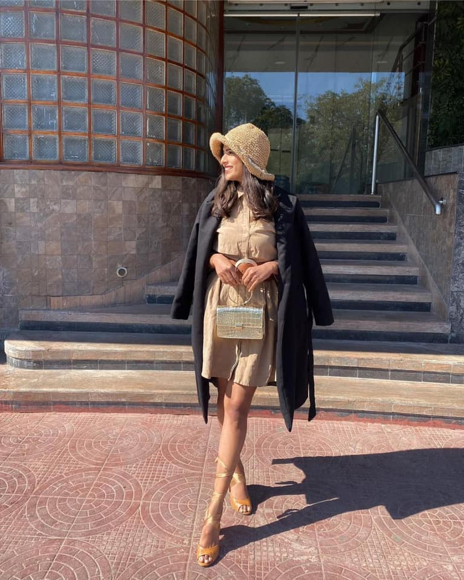

|
 |
Fashion Blogs You Need
With top-tier fashion bloggers raking in multimillion-dollar campaigns, it’s no wonder every self-proclaimed fashionista wants to It’s time to put your caps and snapbacks to rest, because this season is all about berets and biker hats. This trend became a big hit in early 2017 when we saw our favorite models and celebrities like Bella Hadid, Vanessa Hudgens, Kendall Jenner and Rihanna wear them.
The trend is now firmly establishing itself on the streets, especially since Chanel made the beret its most noticeable accessory during its Cruise 2019 show.
It’s time to put your caps and snapbacks to rest, because this season is all about berets and biker hats. This trend became a big hit in early 2017 when we saw our favorite models and celebrities like Bella Hadid, Vanessa Hudgens, Kendall Jenner and Rihanna wear them. The trend is now firmly establishing itself on the streets, especially since Chanel made the beret its most noticeable accessory during its Cruise 2019 show.
boy
Ut sed libero luctus, molestie augue et, vehicula odio. Phasellus feugiat risus mauris, in accumsan ipsum mollis vel. Nulla cursus dui ut ante volutpat, quis ultrices velit elementum.
Mark Ceo Aluacm
Still, it’s hard to wear a beret without feeling like you’re giving off major bonjour vibes, and the same goes for a biker cap. But both styles are rooted in rebellion — the beret was used by French citizens to subtly show their nationalism during World War II and biker caps were popularized by biker gangs in the late 40s in America. So why not throw caution to the wind and embrace your subversive side?
|
|
Spice Girls launch limited
Following the announcement of the Spice Girls reunion tour last week, the foursome are now planningFollowing the announcement of the Spice Girls reunion tour last week, the foursome are now planning a fashion range.
During their appearance on The Jonathan Ross Show, the girl band revealed that they are launching a limited edition clothing range which will include a T-shirt, sweatshirt and hoodie emblazoned with the hashtag #IWANNABEASPICEGIRL – a play on their 1996 hit single Wannabe.
The good news doesn’t stop there; Emma, Melanie C, Mel B and Geri also announced that 100 per cent of the proceeds from the collection will be donated to Comic Relief’s Gender Justice fund, which helps champion equality for women and girls in the UK.
The style evolution of the Spice Girls through the years
Comic Relief has been funding programmes tackling gender-based sexual and domestic violence, and supporting women and girl’s empowerment since it began in 1985.
It says that this money will help us to continue supporting organisations doing such fantastic work to help drive change.
“Equality and the movement of people power has always been at the heart of the band. It is about equality for all, ‘every boy and every girl’,” said the Spice Girls in a statement.
“We recently found out that charities focused on issues faced by women don’t get the funding that they desperately need, so launching a campaign to raise funds for these issues is incredibly important to us and an area we want to support.”
Similarly, Victoria Beckham – who isn’t joining the band on their reunion tour – launched her own Spice Girls charity T-shirt to help Comic Relief’s Red Nose Day back in April.
|
 |
|
|
Winter Date Outfits That Look Hot
Picking out a date night look is hard enough. Add chilly weather into that equation and Picking out a date night look is hard enough. Add chilly weather into that equation and the difficulty level of getting dressed goes up significantly. But it doesn’t have to. The season of sexy sundresses and crop tops may be over, but that doesn’t mean you can’t put together winter date outfits that are cold weather-appropriate and cute.
Whether you’re heading out for a romantic dinner, grabbing cocktails at a bar or hitting a holiday party, you don’t need to freeze to get your flirty on. All it takes is a little creative styling to prep the perfect winter date outfit. That means layering in rich textures like leather, faux fur, suede and more — and having a decent supply of stylish boots on hand, er, foot. You may not be able to show as much skin as you do in summer, but you’ll still look just as hot.
Ahead, we’ve curated a few easy, no-fail winter date outfits guaranteed to send your significant other’s heart racing. Shop them ahead and get ready for things to heat up.
Over this past year, everything appears to have been fastened with horn and tortoiseshell buttons, but I predict that 2019’s update will centre around bows. Whether big or small, these whimsical little additions will be found on everything from summer blouses and dresses to jewellery and hair accessories.
|
|